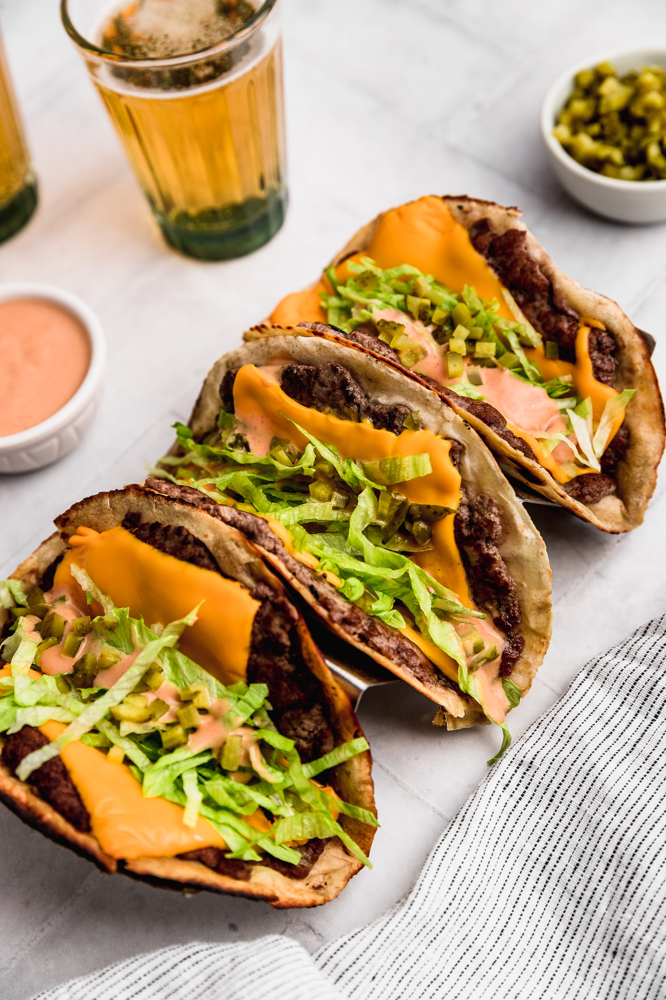

Taco Smash Burger

A Quick & Unique Meal!
Who doesn't like tacos and smash burgers!? Well now you can have a Taco Smash Burger! This is one of
those new trends that you may have seen floating around social media but believe it or not, the Taco
Smash Burger is well worth the hype! Not only is it easy to make but it's also very easy to master so you
are sure to impress your guests or even just your own stomach!
What You Need
- Ground Beef | 1 lbs
- Corn Tortilla (or Tortilla of choice) | 6-10
- Salt (Any other seasonings you may want) | To Taste
- Cheese of Choice | 6-10 Slices
- Toppings and Condiments of Choice
What To Know
-
You can use any kind of tortilla you'd like but I'd stick to the smaller size "street taco" tortilla
shells because it makes working with and cooking the ground beef much easier.
-
I like to use mainly salt to season my meat but occasionally I'll add some things like
Lawry's Seasoning or just some basic garlic and onion powder!
-
I love cheese! I use two slices of Pepper Jack cheese but if I'm not in the mood for spicy food then
I like the classic chedder or even some swiss cheese, Yum!
-
The trick is to treat it like it's a normal burger, but don't be afraid to get creative and dice up some
jalepenos or even a little fresh cilantro! Typically I enjoy these with the classic lettuce, pickles,
onions and ketchup but build these however you'd like!
What To Do
-
The First step is to thaw your ground beef. Overnight in the fridge is the best way but if you are in a
pinch and need results now, then the microwave can be helpful. Just be careful, it likes to start cooking
the meat if you leave it in for too long.
-
Once your ground beef is no longer frozen you can make a small ball of meat, about 1-2 inches in diameter
and then begin smashing the ground beef onto one side of the tortilla. The key to this step is to smash
it as thin as you can and covering the entire torilla shell. Typically the patty will shrink in size
slightly so you can make the patties a little bit bigger than the tortilla shells. Add and remove meat
as neccessary and dont forget to season the exposed side of the beef!
-
Put a pan or iron skillet on medium-high heat and allow it to warm up. Once it's hot you can put the
taco smash burger meat side down (don't forget to season!).
-
Allow it to cook for 4-10 minutes depending on how well done you'd like it and flip for 1-2 minutes or
or until the tortilla starts to brown. It doesn't take long for the torilla to finish so if your meat
isn't cooked to your liking I'd flip it back over and finish cooking the meat first.
-
Once your meat and tortilla is cooked to your liking you can quickly add a slice of cheese to it, either
while they are still on the pan/skillet or once they are off the heat. I like to cook the tortilla so
that it's a little crispy and then remove the taco smash burger from the heat and add my cheese then.
-
From here you can start adding any toppings or condiments that you may like! This is where the fun
begins! Like I said earlier, get creative! You can totally make an actual "taco" taco smash burger
if you know what I mean! The important part is to make it however you like it!
- All that's left is to do is fold it in half like a taco and enjoy!